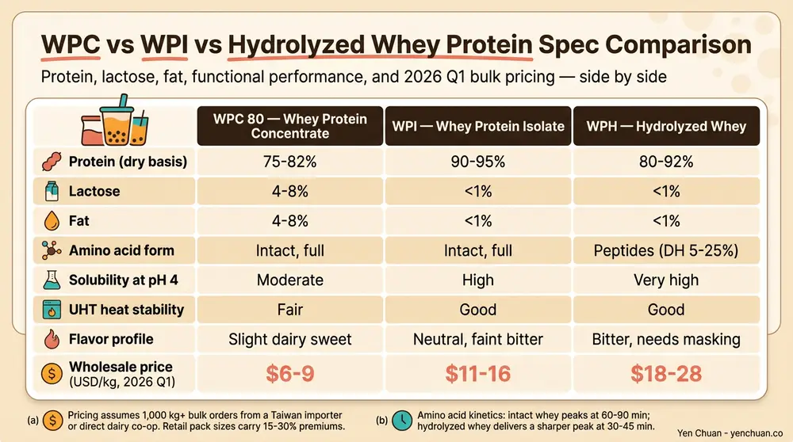
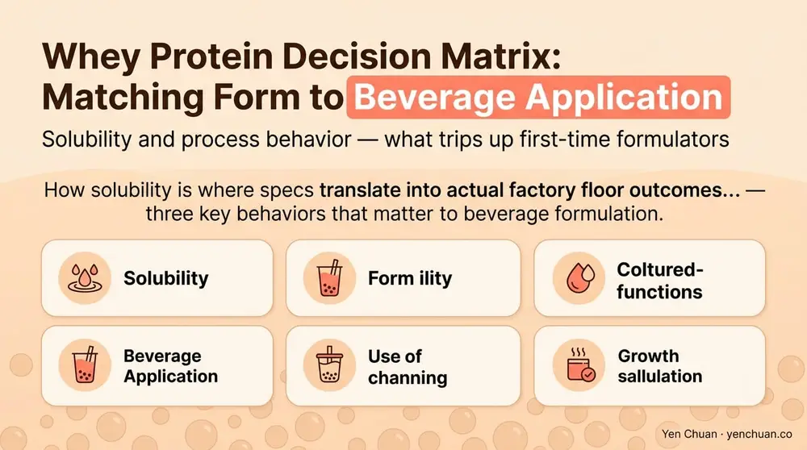

Articles / Business & sourcing
WPC vs WPI vs Hydrolyzed Whey B2B Guide
2026-04-06 · Industry Trends, Technical Guide

For a B2B formulator working on high-protein bubble tea, ready-to-drink beverages, or functional milk tea lines, the difference between whey protein concentrate, whey protein isolate, and hydrolyzed whey is not a minor spec choice. It determines cost per gram of protein, mouthfeel, solubility in cold liquids, allergen profile, and whether the label can carry specific claims like "clear protein" or "rapidly absorbed." This guide compares the three whey forms head-to-head on the parameters that actually show up in a formulation brief: protein concentration, lactose and fat levels, amino acid profile, solubility and heat stability, sensory behavior, price, and certification availability.
The three forms, defined on spec
Whey is the liquid by-product of cheese production. What a supplier calls whey protein depends on how that liquid is filtered, concentrated, and processed. Three forms dominate the functional beverage and sports nutrition ingredient market:
- WPC (whey protein concentrate): 34-80% protein by weight, depending on grade. Retains most of the original whey's lactose, fat, and immunoglobulins. Manufactured by ultrafiltration of liquid whey.
- WPI (whey protein isolate): 90%+ protein by weight. Most lactose and fat stripped out via additional microfiltration or ion-exchange chromatography. A cleaner, more neutral ingredient.
- Hydrolyzed whey (WPH): Enzymatically pre-digested whey — peptide chains broken down into shorter fragments. Usually built on a WPI base. 80-90%+ protein with small-peptide structure for faster absorption.
Understanding this chain of processing is the fastest way to predict how each form will behave in a beverage. Each additional processing step strips more non-protein content and costs more.
The spec comparison formulators actually need
The table below shows the parameters that determine formulation success, based on standard ingredient documentation from Taiwan, New Zealand, and US dairy co-op suppliers.
| Parameter | WPC 80 | WPI | Hydrolyzed Whey (WPH) |
|---|---|---|---|
| Protein content (dry basis) | 75-82% | 90-95% | 80-92% |
| Lactose content | 4-8% | <1% | <1% |
| Fat content | 4-8% | <1% | <1% |
| Ash (minerals) | 3-5% | 2-4% | 2-4% |
| Amino acid profile | Full spectrum, intact | Full spectrum, intact | Fragmented peptides (DH 5-25%) |
| Solubility at pH 4 | Moderate | High | Very high |
| Solubility at pH 7 | High | High | Very high |
| Heat stability (UHT) | Fair, may aggregate | Good | Good |
| Flavor | Slight dairy sweetness | Neutral, sometimes faintly bitter | Noticeably bitter without masking |
| Typical wholesale price (USD/kg, 2026 Q1) | 6-9 | 11-16 | 18-28 |
| Certification depth (typical) | Halal, Kosher, non-GMO | + Grass-fed, grass-finished, A2 | + Pharma-grade, low-allergen |
The pricing band assumes 1,000+ kg bulk orders from a Taiwan importer or direct dairy co-op. Smaller orders and retail pack sizes carry 15-30 percent premiums. For context on how these ingredient specs get documented and labeled for the US market, see our FDA nutrition labeling requirements breakdown.

Where each form actually wins
The right choice depends on what you are building. Below is how we see the decision play out across the most common beverage applications.
WPC 80 — the workhorse for milk-tea and creamy protein drinks. WPC retains enough fat and lactose to deliver mouthfeel without masking agents, making it the default for opaque, milk-based protein bubble teas and ready-to-drink creamy shakes. The slight dairy sweetness is usually an asset, not a liability. Cost per gram of protein is the lowest of the three, which matters enormously at scale. The trade-off is heat stability — WPC tends to aggregate under UHT processing, so pasteurization windows need tighter control.
WPI — the standard for clear protein beverages and low-fat formulations. Strip the fat and lactose and you unlock a clearer, more neutral ingredient that dissolves well across pH ranges. WPI is the right choice for protein waters, clear protein teas, and formulations where the "clean label" or "low-lactose" claim is doing commercial work. The neutral flavor also travels better with fruit and citrus applications, where WPC's dairy notes would fight the flavor. Price sits in the middle of the three.
Hydrolyzed whey — the specialty tool for fast absorption and low-allergen positioning. WPH's short peptides absorb faster than intact protein, which is the primary claim in recovery and performance beverages. It is also the form of choice for hypoallergenic infant and medical nutrition applications, because the pre-digestion reduces the allergenic potential of intact whey. The downside is bitterness — WPH needs serious flavor masking to taste acceptable, and the price is roughly double WPI. Most formulators use it sparingly, blending 10-30 percent WPH with a WPI base rather than using pure WPH.
Amino acid profile — same spectrum, different delivery
All three forms share the same underlying amino acid spectrum, because they start from the same whey. The critical amino acids for muscle-protein synthesis — leucine, isoleucine, valine — land in similar proportions across all three. What differs is how the body absorbs them.
Intact whey (WPC and WPI) delivers amino acids as proteins, which digestive enzymes break down in the small intestine. This produces a steady aminoacidemia curve peaking roughly 60-90 minutes after consumption. Hydrolyzed whey delivers peptides that bypass some of that initial breakdown, producing a faster, sharper amino acid peak at roughly 30-45 minutes. For most consumer-facing protein beverages, this difference is a marketing nuance, not a functional one. For competitive recovery products, it can be a legitimate spec differentiator.
Solubility and process behavior — what trips up first-time formulators
Solubility is where specs translate into actual factory floor outcomes. Three behaviors matter for beverage formulation:

Cold solubility. All three forms dissolve well in cold water with proper agitation. WPI dissolves fastest and cleanest. WPC can leave faint cloudiness due to retained fat. WPH dissolves fastest of all but foams aggressively, which matters for filling line calibration.
pH sensitivity. Whey proteins approach their isoelectric point near pH 4.6, where solubility drops. For fruit-forward formulations (pH 3.5-4.2), WPI and WPH are preferred because they carry less fat to destabilize. WPC can precipitate visibly at low pH unless stabilizers are added.
Heat processing. UHT and HTST pasteurization can denature whey proteins, causing aggregation and mouthfeel changes. WPI and WPH generally survive better than WPC. For long shelf-life ready-to-drink products (9-12 months), specification of heat-stable grades (e.g., WPI with reduced calcium) avoids post-pasteurization sedimentation.
Bubble tea formulators experimenting with protein-fortified milk teas often start with WPC 80 at 3-5 percent inclusion, then move to WPI blends if sedimentation or mouthfeel becomes an issue. For the overall ingredient sourcing picture, our Taiwan vs China vs Southeast Asia sourcing guide covers origin-level quality differences, and the milk tea supplier guide covers vetting protocol. For adjacent ingredients, see non-dairy creamer and our broader powders catalog.
Certification depth — what each form can claim
Certification availability shifts meaningfully across the three forms, and this often drives sourcing decisions for export-sensitive buyers.
WPC typically carries Halal, Kosher, and non-GMO certifications as standard. Grass-fed and A2 certifications are available but add 20-40 percent to cost. WPI supports the same certifications with broader grass-fed availability, because the higher-value ingredient justifies premium sourcing. WPH extends into pharma-grade, low-allergen, and clinical-nutrition certifications — relevant for medical and infant formula applications. For chain buyers navigating certification complexity, the RSPO vs non-RSPO creamer piece has a parallel discussion of certification cost-benefit in the non-dairy creamer category.
Our formulation defaults
For Yen Chuan's B2B customers working on bubble tea and functional beverage lines, the working defaults we recommend as starting points:
- Creamy protein bubble tea, 15-20g protein per 500ml: WPC 80 at 3-4% inclusion, blended with non-dairy creamer for mouthfeel
- Clear protein fruit tea, 10-15g protein per 500ml: WPI at 2-3% inclusion, pH 3.8-4.2
- Performance recovery RTD, 20-30g protein per 355ml: 70% WPI + 30% WPH, with masking system for WPH bitterness
- Medical or infant nutrition: WPH base, full pharma-grade spec
These are starting frames, not final formulas. Each application needs sensory work, shelf-life testing, and process validation on your specific line.
Authority citations
- International Dairy Federation — Whey Protein Technical Reference
- USDA Dairy Grading Branch — Whey Protein Standards and Labeling
- Journal of Food Science — Comparative Solubility and Stability of WPC, WPI, and WPH
- Mordor Intelligence — Global Whey Protein Market Report 2026
- FDA — Food Allergen Labeling and Hydrolyzed Protein Guidance
About Yen Chuan
Yen Chuan has been at the heart of Taiwan's bubble tea industry for over 20 years, supplying premium powders, syrups, tapioca pearls, and tea leaves to thousands of boba shops worldwide. With an in-house R&D lab and a commitment to quality ingredients, Yen Chuan is more than a supplier — we're your partner in the boba business.
Our formulation team works with B2B customers building high-protein bubble tea, RTD functional beverages, and specialty nutrition lines. The whey protein spec comparisons here reflect what we see across actual customer briefs in 2026.
Ready to spec your next formulation?
If you are building a high-protein bubble tea, a clear protein RTD, or a functional beverage line and need help matching the right whey grade to your product, our in-house R&D lab can help. Contact us with your target protein content, pH, shelf life, and sensory profile, and we will propose a starting formula and sample plan.
Frequently Asked Questions
Q: What is the difference between WPC, WPI, and hydrolyzed whey? A: WPC (whey protein concentrate) is 34-80% protein with residual lactose and fat. WPI (whey protein isolate) is 90%+ protein with most lactose and fat removed. Hydrolyzed whey is pre-digested WPI or WPC, with peptide chains broken down for faster absorption. Processing steps compound: each form costs more than the last.
Q: Which whey protein is best for bubble tea formulation? A: For creamy milk-tea style protein drinks, WPC 80 at 3-4% inclusion is the workhorse. For clear fruit-forward protein teas, WPI at 2-3% is preferred because it dissolves cleanly at low pH and has a neutral flavor. Hydrolyzed whey is rarely used solo — it is blended in at 10-30% for recovery claims.
Q: Why is hydrolyzed whey so much more expensive? A: Hydrolyzed whey requires enzymatic processing on top of the microfiltration used for WPI, plus typically more extensive bitterness-masking work. The result is 1.5-2x the price of WPI. Most formulators reserve it for recovery products, medical nutrition, and hypoallergenic applications where the faster absorption or reduced allergenicity justifies the cost.
Q: Does WPC, WPI, or WPH have a better amino acid profile? A: All three share essentially the same amino acid profile because they start from the same whey source. What differs is absorption speed: WPH delivers a faster amino acid peak at 30-45 minutes, while intact WPC and WPI peak at 60-90 minutes. For most consumer protein beverages this is a marketing nuance, not a functional difference.
Q: Which whey form is most heat-stable for UHT-processed beverages? A: WPI and WPH generally survive UHT processing better than WPC, because the higher fat content in WPC can promote aggregation under heat. For long shelf-life RTDs (9-12 months), heat-stable grades of WPI with reduced calcium are the standard choice to prevent post-pasteurization sedimentation.